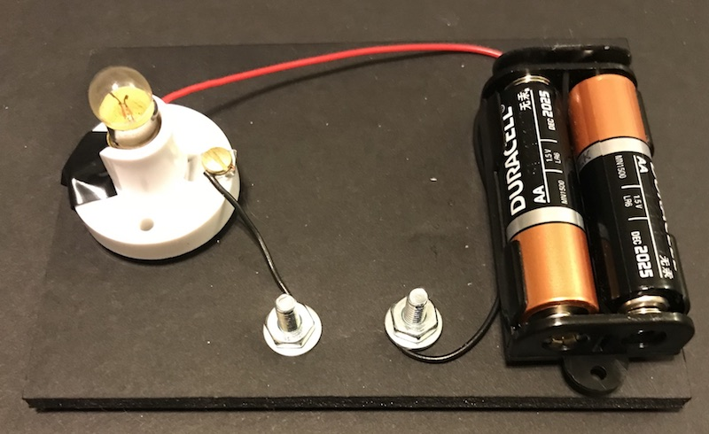
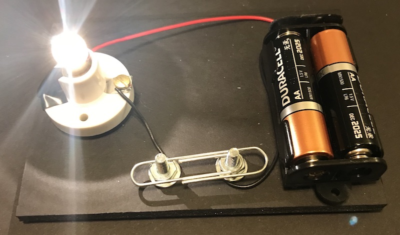

How Does a Basic Circuit Work? (continued)
In this circuit, the wires are connected to two posts with a gap in between. When there is nothing between the gap, the current cannot flow and the light remains off.
Since electric current flows through metal objects, we can put a paper clip between the two posts and the light will turn on.
